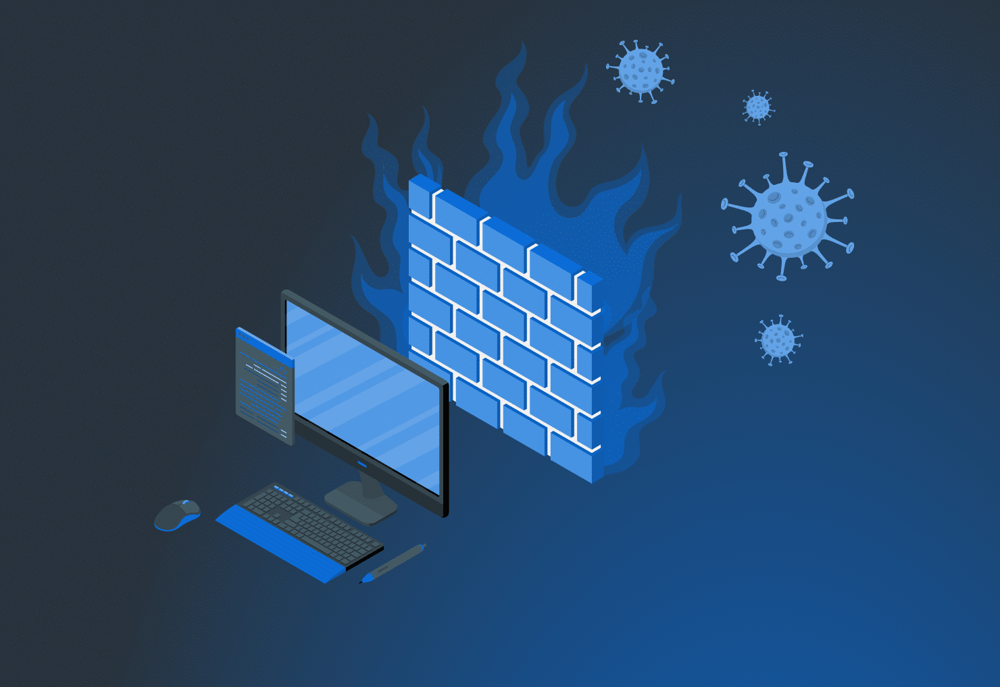

Episodio destacado: Amenazas del 2025
Descubre cuáles son los ciberataques más comunes este año y cómo protegerte.
Episodios
-
¿Qué es el phishing?
Aprende cómo identificar correos y mensajes falsos diseñados para robar tu información.
-
Contraseñas seguras
Buenas prácticas para crear y gestionar contraseñas imposibles de adivinar.
-

¿Qué es un firewall?
Conoce cómo funcionan los cortafuegos y su importancia en la seguridad digital.